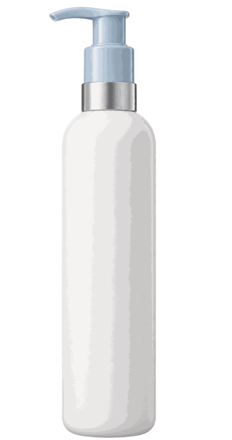

Formula –
My skin –
–/100
Read from the label you photographed
Judged as a product — we're not certain.
AI Smart Reviews®
On what you flagged
AI overview
What buyers report
Why this score, for you
Formula –
My skin –
Better for your skin
Same job, higher score for you.
SmartSkin gives skincare guidance, not a medical diagnosis. If you have a skin condition, talk to a dermatologist.